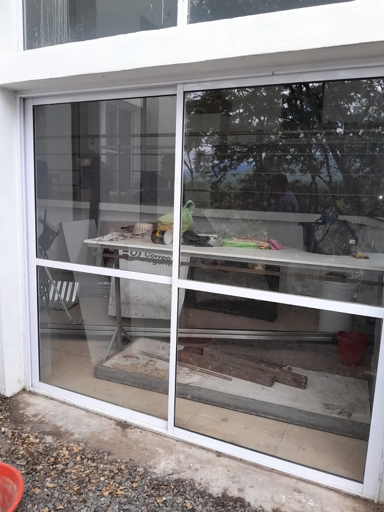
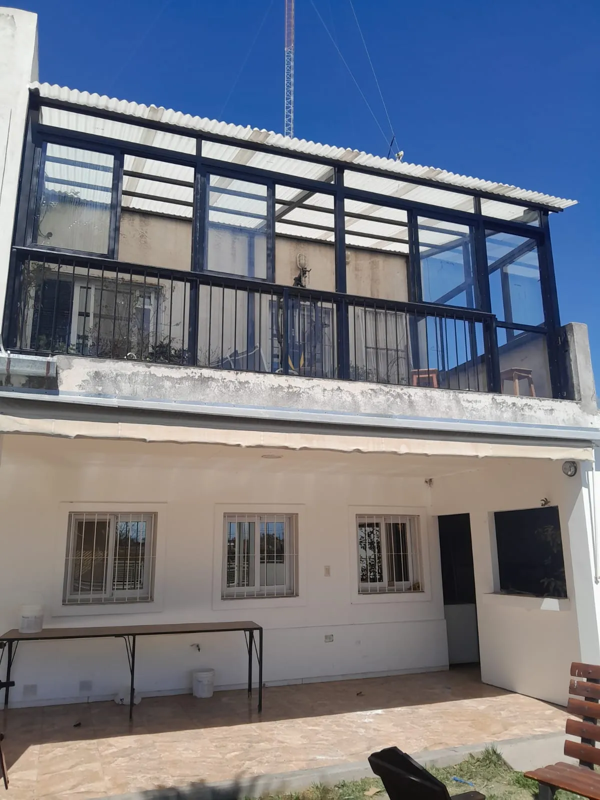
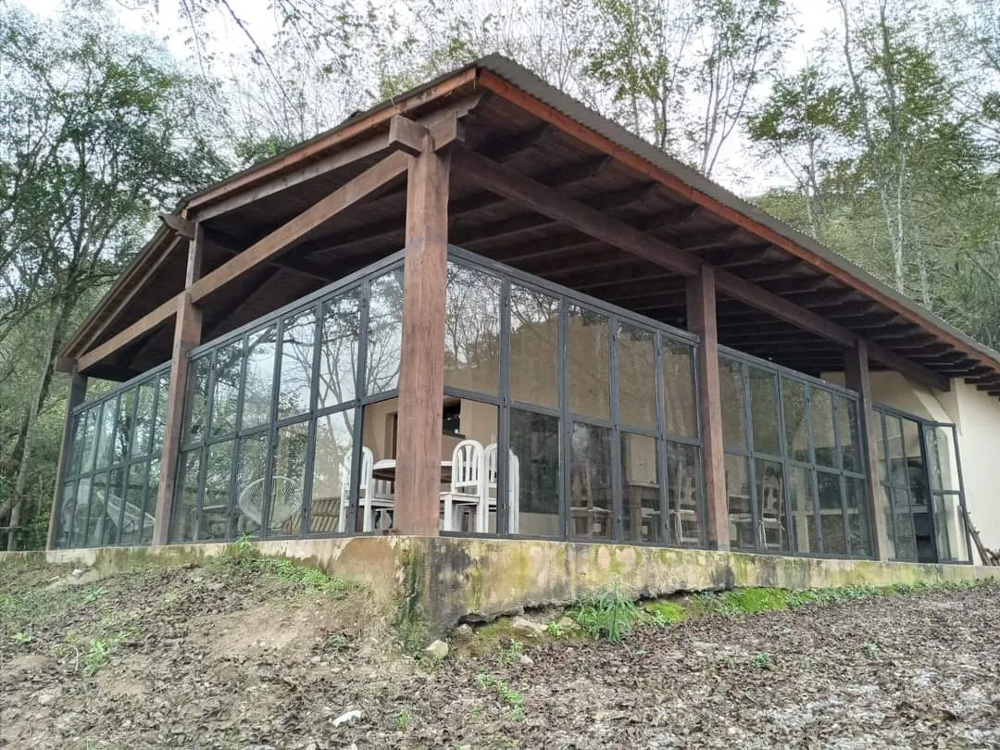
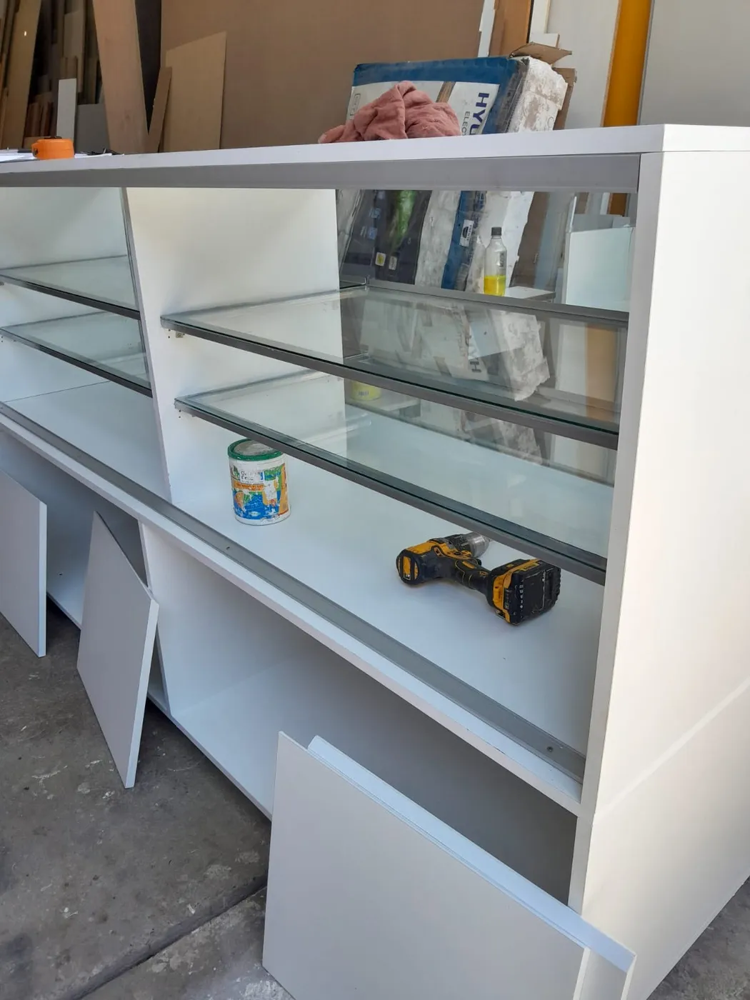
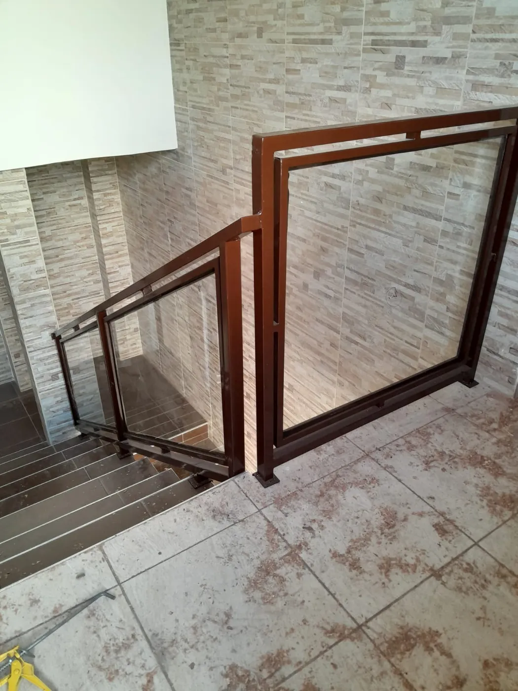

01Aberturas
Aberturas
y ventanas
Paños vidriados para puertas y ventanas, integrados a cada ambiente.
VIDRIOS R-26 · SALTA
Hacemos todo tipo de trabajos en vidrio para hogares y comercios de Salta Capital y alrededores.
Salta Capital
y alrededores
Ventanas · Cerramientos · Vitrinas · Barandas

Soluciones en vidrio para que cada ambiente se sienta más abierto, luminoso y propio.
SALTA, ARGENTINALO QUE HACEMOS
Cada trabajo parte de un espacio distinto. Estas son algunas de las aplicaciones que se ven en los trabajos de R-26.

Paños vidriados para puertas y ventanas, integrados a cada ambiente.

Más resguardo y luz para espacios que se disfrutan todo el año.

Estantes y frentes vidriados para organizar y mostrar productos.

El vidrio acompaña el recorrido y deja pasar la luz entre ambientes.
¿Tenés otro trabajo en mente? R-26 realiza todo tipo de trabajo en vidrio. Consultanos por el tuyo
UN TRABAJO DE R-26
Un cerramiento vidriado transforma una galería en un ambiente para compartir. Mirá este trabajo de Vidrios R-26.
¿Pensás hacer algo parecido?HECHO EN VIDRIO
Fotos compartidas por Vidrios R-26. Tocá una imagen para verla más grande.
PARA EMPEZAR
Una foto y algunos datos ayudan a entender mejor el espacio y lo que necesitás.
Decinos si es una ventana, un cerramiento, una vitrina o algún otro trabajo en vidrio.
Si tenés, sumá medidas aproximadas y la zona donde se haría el trabajo.
R-26 recibe tu consulta directamente y puede orientarte sobre cómo seguir.
CONSULTAS
¿Tenés otra consulta? Escribinos y la vemos.
Vidrios R-26 realiza todo tipo de trabajos en vidrio. En esta página mostramos algunos ejemplos: ventanas, cerramientos, vitrinas y barandas.
La atención es en Salta Capital y alrededores. Escribinos para consultar por tu zona.
Una foto del espacio, una medida aproximada y la ubicación son un buen punto de partida.
VIDRIOS R-26 · SALTA
Mandanos una foto y contanos qué tenés en mente. Lo charlamos por WhatsApp.